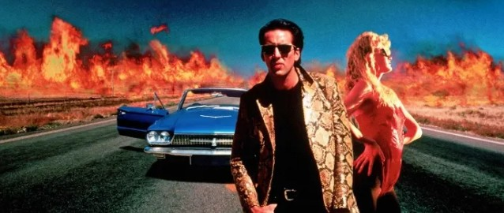
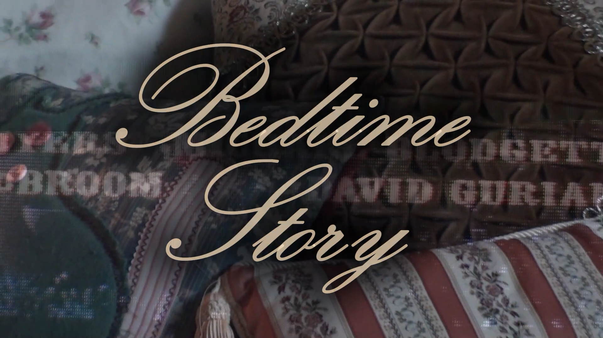
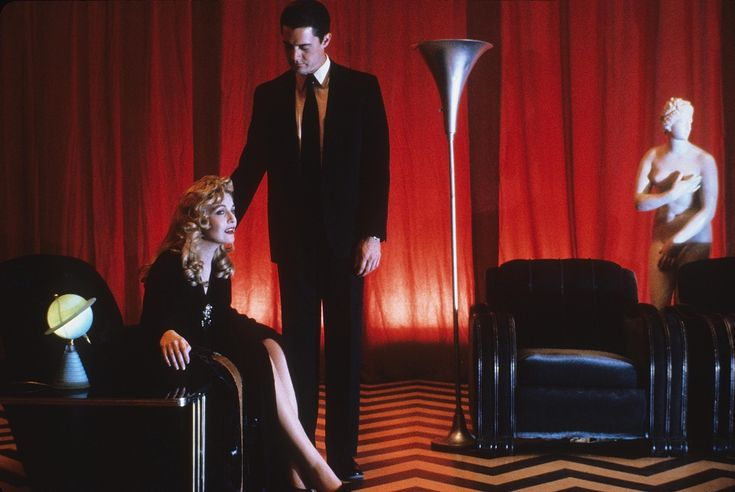
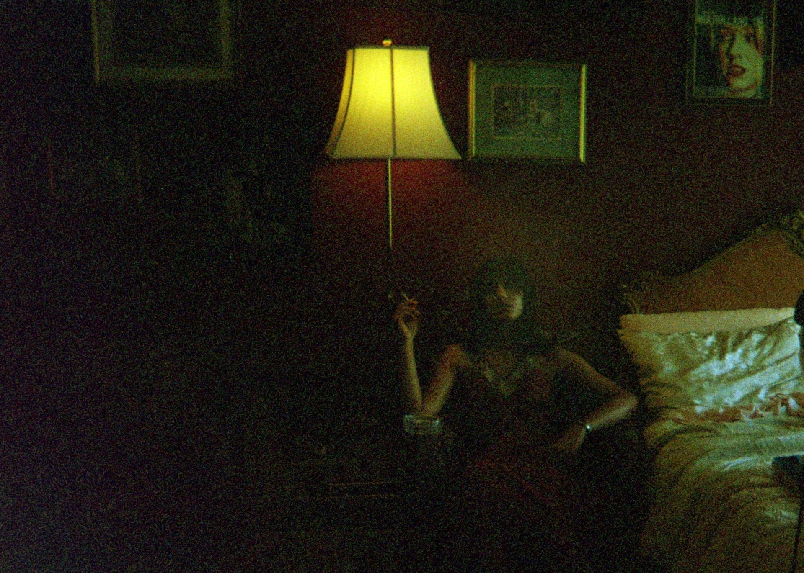

Shy Tandon
☆ ★ ☆ ★ ☆ ★ ☆ ★ ☆ ★ ☆ ★ ☆ ★ ☆ ★ ☆ ★ ☆ ★ ☆ ★ ☆
“This is a snakeskin jacket...and for me, it’s a symbol of my individuality and my belief in personal freedom.” — Wild at Heart (1990)

* - * - * - * - * - * - * - * - * - * - * - * - * - * - * - * - *

Bedtime Story
A short film...04/28/2026
"Bedtime stories are stories we tell our children to sleep. This Bedtime Story, inspired by another Bedtime Story, is a two minute story for the viewing of our children of twenty-one fifty..."

STAR MOTEL
A short story...04/04/2026
"Do you know what love is about? Do you want to know? Do you think you have what it takes? Call 1-800-LOVEME...for secrets waiting to be unveiled. This program is brought to you by..."

A Love Story
A flash fiction...02/09/2026
"Traffic lights hung on span cables, illuminating the snowy blacktop,
glistening like the frozen lake, like the starry sky.
The twinkles in the black sky that were in fact not stars, but airplanes,
on a cold and lonely February night..."

The Story of the TV
A flash fiction...02/03/2026
"But the world was no longer there like how it was when she was little.
That little TV changed. Coaxial became RCA became HDMI. The lights got brighter,
and bluer. The pictures were clear like crystal..."

AI and the Fear of Being Human
An essay...12/11/2025
"Artificial Intelligence is being used in increasingly personal ways. Discourse around AI tends to focus on the fear of human replacement, but through the careful exploration of contemporary research in psychology, moral decision-making, and AI companionship, as well as theoretical frameworks from Mark Fisher and Jean Baudrillard, It is revealed that there is a deeper problem at hand, *our willingness for replacement*. This paper traces how AI reinforces distorted forms of self-recognition, encourages moral outsourcing, and produces simulated relationships that mask the absence of real connection. Through evidence of AI-induced psychosis, sycophantic feedback loops, and the phenomenon of “pure simulacra”, we confront the fear underneath it all. The fear of being human..."
How Could One Walk Through Sand Without Stepping Over Stone?
A short film...09/11/2025
"An invitation to take your shoes off, walk barefoot with me in the sand, & tread carefully over stone."

Religion & Reason in the Face of the Grotesque: Flannery O'Conner's Southern Gothic Fiction
An essay...06/12/2025
"Flannery O’Connor’s fiction challenges the worldview of the religious and the intellectual, particularly in her short stories _Good Country People_ and _The Lame Shall Enter First_. It would seem upfront that these two belief systems are pitted against one other, but in her characteristic Southern Gothic style, they are both confronted by the unexpected and grotesque, with meager efforts to prove themselves in the face of horrific, unimaginable, darkness..."

Sweet Elaine
A fictional perspective of Elaine from the Arthurian love story "Lancelot and Elaine"...04/03/2025
“They would lay me down, dressed to the finest. In my palms would sit my transcribed note, where I shall guard it even in death. In the bed I died for Lancelot’s love, they would place in a boat decked like the Queens, and send me with the flood up the great river to Camelot, where I would arrive at the Palace doors..."

Notes From a Train Westbound
Personal essay...02/07/2025
"Light flurries of snow fall from the cold gray February sky onto the lake in Chicago. Seventy degrees and sunshine is expected in Dallas today. Los Angeles is soaking up the much-anticipated rain after the Santa Ana winds and a devastating fire season. On the 19th of July this past summer I departed on a 2,438-mile journey via rail out of Union Station just days after forty-one tornados hit Illinois..."

Twin Peaks and the Shadows of Evil
An essay...12/12/2024
"To simply disregard the darkness inside of us is to live in the dark from ourselves, unable to achieve that genuine authenticity and maximize our potential for fulfillment, and from reality, limiting the ability to critically think for oneself and question, remaining susceptible to the manipulations and untruthful narratives of a society, to be a pawn in the larger scheme, and remain in the self-sustaining cycles of control..."

On Writing
Personal essay...11/06/2024
"If there was no story, it did not interest me. It was pointless..."